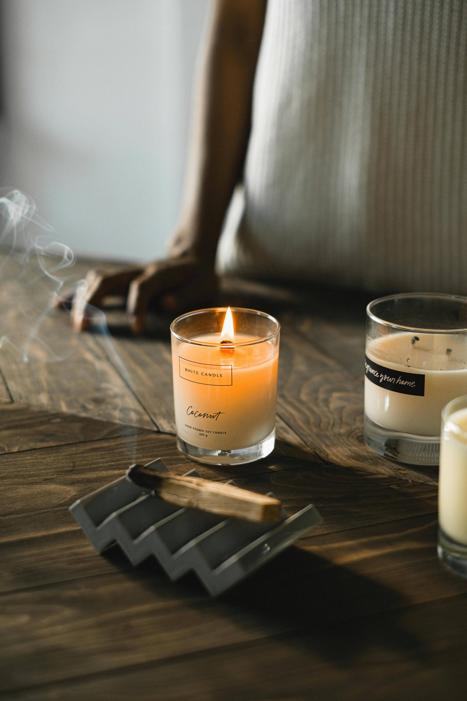

Qirinj Aromatik Artizanal
Kategori: Handmade

Çmimi: 900 Lekë
Këta qirinj janë bërë me dyllë natyral soje dhe vajra esencialë me aromë relaksuese si livando, vanilje dhe kanellë. Përveç funksionit aromaterapeutik, janë dekorativë dhe një dhuratë perfekte për raste të veçanta.
- Dyllë soje natyral, pa toksina
- Kapak bambuje për ruajtjen e aromës
- Koha e djegies: rreth 40 orë